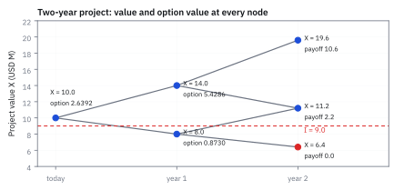
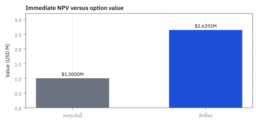

23.1 Real Options and Dynamic Programming
สิทธิ์ที่จะรอก่อนลงทุนมีราคา และหาราคานั้นได้ด้วยการคิดย้อนจากปลายทางทีละ node
บริษัทพลังงานถือใบอนุญาตสร้างโรงไฟฟ้า ถ้าสร้างวันนี้ โรงไฟฟ้ามีมูลค่า \$10 ล้าน (มูลค่าปัจจุบันของเงินสดทั้งหมดที่มันจะทำได้) ค่าก่อสร้าง \$9 ล้าน NPV จึงเป็น +\$1 ล้าน ใบอนุญาตให้เลื่อนการสร้างได้ถึงสองปี แต่ละปีมูลค่าโรงไฟฟ้าคูณ 1.4 หรือคูณ 0.8 ดอกเบี้ยไม่มีความเสี่ยง 5% ต่อปี ฝ่ายวางแผนเสนอว่า “NPV เป็นบวก สร้างวันนี้เลย” ควรเซ็นอนุมัติไหม?
ลองตอบก่อนเปิดเฉลย
ไม่ควร ใบอนุญาตที่ยังไม่ใช้มีค่า \$2.6392 ล้าน สร้างวันนี้ได้แค่ \$1 ล้าน การเซ็นวันนี้จึงทิ้งมูลค่าไป \$1.6392 ล้าน ค่าของการรอมาจากสองแหล่ง: จ่ายค่าก่อสร้างช้าลงสองปี (มีค่า \$1.8367 ล้าน) และสิทธิ์ที่จะไม่สร้างเลยถ้ามูลค่าตกเหลือ \$6.4 ล้าน (มีค่า \$0.8025 ล้าน) NPV บวกบอกว่าโครงการดี แต่ไม่ได้บอกว่าวันนี้คือวันที่ดีที่สุด
สิ่งที่เราจะสร้าง
18.1 สอน NPV: เอามูลค่าปัจจุบันของเงินสดลบเงินลงทุน แล้วลงทุนถ้าผลเป็นบวก 18.3 สอนการตั้งราคา option บนต้นไม้สองกิ่ง หน้านี้เอาสองเรื่องมาชนกัน ผู้บริหารที่เลื่อนโครงการได้กำลังถือ call option บนโครงการ โดยมีค่าก่อสร้างเป็น strike สิทธิ์แบบนี้เรียกว่า real option เพราะอ้างอิงสินทรัพย์จริง ไม่ใช่หุ้น
เราจะเริ่มจากเกมลูกเต๋าที่ทำให้เห็นว่าทำไมต้องคิดจากปลายทางย้อนมา แล้วตั้งต้นไม้ของโรงไฟฟ้า หาน้ำหนักตั้งราคา แก้ทีละ node จนได้ 2.6392 แยกคำตอบเป็นค่าของเวลากับค่าของประกัน ดูว่าความไม่แน่นอนเพิ่มค่าเมื่อไร แล้วจบที่เหมืองทองสิบปีซึ่งมีทั้งสิทธิ์หยุดขุดและสิทธิ์อัปเกรดเครื่องจักร
ศัพท์ที่ใช้ในหัวข้อนี้
- Real option
- สิทธิ์ (ไม่ใช่หน้าที่) ที่จะลงทุน เลื่อน ขยาย หรือหยุดโครงการจริง ใช้ตีราคาความยืดหยุ่นที่ NPV จุดเดียวมองไม่เห็น
- NPV (net present value)
- มูลค่าปัจจุบันของเงินสดที่โครงการสร้าง ลบเงินลงทุน (18.1) ตอบคำถามว่าถ้าต้องตัดสินใจเดี๋ยวนี้ คุ้มไหม แต่ไม่ถามว่ารอแล้วดีกว่าไหม
- Backward induction
- แก้ปัญหาหลายช่วงเวลาโดยเริ่มจากช่วงสุดท้ายซึ่งไม่เหลือทางเลือก แล้วถอยมาทีละช่วง จำเป็นเพราะกฎตัดสินใจวันนี้ต้องรู้ค่าของอนาคตก่อน
- Dynamic programming
- ชื่อของวิธีที่แตกปัญหาใหญ่เป็นปัญหาย่อยทีละ node และใช้คำตอบของ node ลูกซ้ำ แทนการไล่ทุกเส้นทาง ต้นไม้สิบปีมี 66 node แต่มี 1,024 เส้นทาง
- Continuation value
- มูลค่าของการยังไม่ใช้สิทธิ์และรอไปอีกหนึ่งช่วง เป็นคู่เทียบของมูลค่าการใช้สิทธิ์ทันทีในทุก node
- Pricing weight (risk-neutral weight)
- น้ำหนักที่ทำให้ต้นไม้ตั้งราคาตัวโครงการเองได้ถูก (18.3) ใช้ถ่วงกิ่งเพื่อตั้งราคา ไม่ใช่โอกาสจริงที่มูลค่าจะขึ้น
- Exercise
- การใช้สิทธิ์ ในหน้านี้คือการจ่ายค่าก่อสร้างหรือจ่ายค่าอัปเกรด หลังจากนั้นสิทธิ์ก็หมดไป
สัญลักษณ์และหน่วย
| สัญลักษณ์ | ความหมาย | หน่วย |
|---|---|---|
| $X_t$ | มูลค่าโรงไฟฟ้า ณ ปี $t$ ถ้าสร้างเสร็จแล้ว (ยังไม่หักค่าก่อสร้าง) | \$ ล้าน |
| $I$ | ค่าก่อสร้าง ซึ่งเล่นบท strike | \$ ล้าน |
| $u,\ d$ | ตัวคูณขาขึ้นและขาลงต่อหนึ่งก้าว | ไม่มีหน่วย |
| $R$ | เงิน 1 ดอลลาร์ที่ฝากแบบไม่มีความเสี่ยงโตเป็นเท่าไรในหนึ่งก้าว | ไม่มีหน่วย |
| $q$ | น้ำหนักตั้งราคาของกิ่งขึ้น | ไม่มีหน่วย |
| $P_t,\ H_t,\ V_t$ | เงินที่ได้ถ้าใช้สิทธิ์ตอนนี้ ค่าของการรอ และมูลค่าของสิทธิ์ ณ node นั้น | \$ ล้าน |
| $s,\ C,\ G$ | ราคาทอง ต้นทุนขุด และกำลังผลิตของเหมือง | \$ ต่อออนซ์, \$ ต่อออนซ์, ออนซ์ต่อปี |
ขั้นที่ 1 — เกมลูกเต๋า: ทำไมต้องคิดจากปลายทาง
ก่อนแตะโรงไฟฟ้า ลองเกมที่ตรวจเองได้ทุกตัวเลข ทอยลูกเต๋าได้ไม่เกินสามครั้ง หลังแต่ละครั้งเลือกหยุดรับเงินเท่าแต้มที่ออก (ดอลลาร์) หรือทิ้งแต้มนั้นแล้วทอยใหม่ ค่าเข้าเล่นที่ยุติธรรมคือเท่าไร?
โจทย์ให้อะไรมาบ้าง: ลูกเต๋าหกหน้า แต่ละหน้าออกด้วยโอกาส 1/6 และกฎหยุดของครั้งแรกตั้งไม่ได้ถ้ายังไม่รู้ว่าการทอยต่อมีค่าเท่าไร เราจึงเริ่มจากครั้งที่สาม
ครั้งที่สามไม่มีทางเลือก ต้องรับแต้มที่ออก ค่าเฉลี่ยคือ 3.5 ถอยมาครั้งที่สอง ตอนนี้รู้แล้วว่าทอยต่อมีค่า 3.5 จึงเก็บแต้ม 4, 5, 6 และทอยใหม่เมื่อได้ 1, 2, 3 ก้อนแรกของ $V_2$ คือแต้มที่เก็บ ก้อนที่สองคือครึ่งหนึ่งของเวลาที่ทอยใหม่ซึ่งมีค่า 3.5
ครั้งแรก เกณฑ์ขยับขึ้นเป็น 4.25 จึงเก็บแค่ 5 กับ 6 เกณฑ์หยุดสูงกว่าเมื่อยังเหลือโอกาสมาก นี่คือหน้าตาของทุกปัญหาในหน้านี้: ในแต่ละจุด เทียบเงินที่ได้ถ้าหยุดเดี๋ยวนี้กับค่าของการรอ แล้วเลือกตัวที่มากกว่า
คำตอบ: ค่าเข้าเล่นที่ยุติธรรมคือ \$4.6667 (= 14/3) กฎเล่นคือ ครั้งแรกเก็บเฉพาะ 5 หรือ 6 ครั้งที่สองเก็บ 4 ขึ้นไป ครั้งที่สามรับอะไรก็ได้ที่ออก
ตรวจเองใน 10 วินาที: $6\times4.6667=28=5+6+4(4.25)=11+17$ ถ้าเล่นได้ 1,000 ครั้ง เกณฑ์จะสูงจนเก็บแต่ 6 ค่าของเกมเข้าใกล้ 6
ขั้นที่ 2 — สิทธิ์ที่จะสร้างคือ call option
กลับมาที่โรงไฟฟ้า ถ้าปีใดตัดสินใจสร้าง บริษัทจ่าย $I$ แล้วได้โรงไฟฟ้ามูลค่า $X_t$ ถ้า $X_t$ ต่ำกว่า $I$ บริษัทแค่ไม่สร้าง ไม่มีใครบังคับ เงินที่ได้จากการใช้สิทธิ์จึงนิยามได้แบบนี้ และต่างจากกรณีถูกบังคับสร้างตรงกิ่งที่แย่
รูปเดียวกับ payoff ของ call ใน 18.3: $X_t$ เล่นบทราคาหุ้น $I$ เล่นบท strike ต่างกันแค่ “หุ้น” ตัวนี้คือโครงการที่ยังไม่ได้สร้าง มุมหักที่ $I$ คือแหล่งมูลค่าทั้งหมด กิ่งที่แย่ถูกตัดที่ศูนย์ ส่วนกิ่งที่ดียังเก็บไว้ครบ
Figure 23.1a — สิทธิ์ที่จะไม่สร้างเปลี่ยน −2.6 เป็น 0

แกนนอนคือมูลค่าโรงไฟฟ้าในปีที่ 2 จาก 4 ถึง 22 ล้าน เส้นประเทาคือกรณีถูกบังคับสร้าง $X-9$ เส้นทึบคือสิทธิ์ $\max(X-9,\ 0)$ จุดดำสามจุดคือ node ปีที่ 2 ของขั้นที่ 3 (19.6, 11.2, 6.4) ได้ 10.6, 2.2 และ 0 จุดเทาที่ −2.6 คือสิ่งที่กิ่งล่างสุดจะเสียถ้าไม่มีสิทธิ์เลือก
ขั้นที่ 3 — ต้นไม้สองกิ่ง และเงื่อนไขที่ห้ามละเมิด
ต้องมีแบบจำลองว่า $X$ เดินอย่างไร เราใช้ต้นไม้ของ 18.3: ปีละหนึ่งก้าว ขึ้นคูณ $u$ ลงคูณ $d$ นี่คือนิยามที่เราเลือก ไม่ใช่ผลที่พิสูจน์ แต่มีเงื่อนไขหนึ่งข้อที่ตัวเลขต้องผ่านก่อนใช้งาน
ทำไมต้อง $d\lt R\lt u$: ถ้าแม้แต่กิ่งลงยังโตกว่าเงินฝาก ใครก็ยืมเงินที่ 5% มาถือโครงการแล้วกำไรทุกกิ่ง เงินฟรีแบบนี้อยู่ไม่ได้ ถ้า $u\le R$ ก็กลับด้านกัน ตัวเลขชุดนี้ $0.8\lt1.05\lt1.4$ ผ่าน
ขึ้นแล้วลงกับลงแล้วขึ้นมาที่เดียวกัน ($14.0\times0.8=8.0\times1.4=11.2$) ปีที่ 2 จึงมีแค่ 3 node ไม่ใช่ 4 จำนวน node โตเป็นเส้นตรงตามเวลา ซึ่งทำให้ต้นไม้สิบปีของเหมืองทองยังคิดได้
ขั้นที่ 4 — น้ำหนักตั้งราคา q ถูกบังคับโดยต้นไม้
การตั้งราคาบนต้นไม้คือถ่วงสองกิ่งแล้วหารด้วย $R$ (18.3) แต่ถ่วงด้วยอะไร? น้ำหนักต้องตั้งราคาตัวโครงการเองให้ถูกก่อน ไม่อย่างนั้นก็ใช้ตั้งราคาอะไรไม่ได้ เงื่อนไขข้อเดียวนี้กำหนด $q$ ออกมาทันที
บรรทัดที่สองหาร $X_0$ ออกทั้งสองข้าง เหลือตัวไม่รู้ตัวเดียว เงื่อนไข $d\lt R\lt u$ ของขั้นที่ 3 คือเงื่อนไขที่ทำให้ $0\lt q\lt1$ พอดี ถ้าละเมิด น้ำหนักจะติดลบหรือเกินหนึ่ง บรรทัดสุดท้ายตรวจว่าน้ำหนักนี้ตั้งราคาโรงไฟฟ้ากลับมาได้ 10.0 จริง
$q=5/12\approx0.4167$ ไม่ใช่โอกาสจริงที่มูลค่าจะขึ้น ต่อให้ทีมวิเคราะห์เชื่อว่าโอกาสขึ้นคือ 60% คำตอบก็ไม่เปลี่ยน เพราะความเชื่อนั้นอยู่ในราคา 10.0 วันนี้แล้ว เราใช้ 5/12 และ 7/12 เป็นเศษส่วนตลอดเพื่อไม่ปัดระหว่างทาง
ขั้นที่ 5 — สมการเดียวที่ใช้ทั้งหน้า
รวมกฎของเกมลูกเต๋ากับน้ำหนัก $q$ ที่ปลายต้นไม้สิทธิ์หมดอายุ มูลค่าจึงเท่ากับเงินที่ได้ถ้าใช้สิทธิ์ ก่อนหน้านั้นทุก node เทียบใช้สิทธิ์เดี๋ยวนี้กับรออีกหนึ่งก้าว
บรรทัดที่สองคือ continuation value: มูลค่าของลูกสองตัว ถ่วงด้วย $q$ แล้วหารด้วย $R$ เหมือนขั้นที่ 4 บรรทัดที่สามคือกฎของเกมลูกเต๋า ชื่อ dynamic programming มาจากตรงนี้ แต่ละ node ใช้คำตอบของลูกที่คิดไว้แล้ว ไม่ต้องไล่ทุกเส้นทาง
ต้นไม้ $T$ ก้าวมี $(T+1)(T+2)/2$ node แต่มีเส้นทาง $2^T$ เส้น สองปีคือ 6 node กับ 4 เส้นทาง สิบปีคือ 66 node กับ 1,024 เส้นทาง ยิ่งต้นไม้ลึก ส่วนต่างยิ่งมหาศาล
ขั้นที่ 6 — ปีที่ 2 และปีที่ 1: รอชนะในทุก node
โจทย์ให้อะไรมาบ้าง: มูลค่าปีที่ 2 จากขั้นที่ 3, $I=9.0$ และ $q=5/12$ ปีที่ 2 เป็นปีสุดท้าย จึงใช้สิทธิ์เฉพาะกิ่งที่คุ้ม แล้วถอยมาปีที่ 1
คำตอบ: ทั้งสองกิ่งของปีที่ 1 เลือกรอ กิ่งบนที่ NPV ของปีนั้นเป็น +5.0 ก็ยังรอ เพราะการรอมีค่า 5.4286
ตรวจเองใน 10 วินาที: จากกิ่งบน ลูกทั้งสอง (19.6 และ 11.2) เกิน 9 จึงสร้างแน่ ค่าของการรอจึงเท่ากับ $14.0-9.0/1.05=14.0-8.5714=5.4286$ ส่วนต่าง 0.4286 คือดอกเบี้ยหนึ่งปีของค่าก่อสร้างที่ยังไม่ต้องจ่าย
ขั้นที่ 7 — วันนี้: 2.6392 เทียบกับ 1.0
โจทย์ให้อะไรมาบ้าง: $V_1^u=5.4286$ และ $V_1^d=0.8730$ จากขั้นที่ 6 ถ่วงแล้วหารอีกหนึ่งปี แล้วเทียบกับการสร้างวันนี้
คำตอบ: ใบอนุญาตมีค่า \$2.6392 ล้าน สร้างวันนี้ได้ \$1.0 ล้าน ส่วนต่าง \$1.6392 ล้านคือค่าของความยืดหยุ่น การเซ็นสร้างวันนี้คือการขายสิทธิ์ที่มีค่า 2.6392 ในราคา 1.0
ตรวจเองใน 10 วินาที: $2.2619+0.5093=2.7712$ หารด้วย 1.05 ได้ 2.6392 และค่านี้ต้องไม่ต่ำกว่า NPV วันนี้ เพราะสิทธิ์รวมทางเลือก “สร้างวันนี้” ไว้แล้ว
Figure 23.1b — มูลค่าโรงไฟฟ้าและค่าของสิทธิ์ทุก node

แกนตั้งคือมูลค่าโรงไฟฟ้า $X$ (ล้านดอลลาร์) ข้างแต่ละจุดเขียน $X$ กับค่าของสิทธิ์ (option) หรือเงินที่ได้ปีสุดท้าย (payoff) จากขั้นที่ 6 และ 7 เส้นประแดงคือ $I=9.0$ จุดแดงจุดเดียวคือ 6.4 ที่ค่าของสิทธิ์เป็นศูนย์ ปีที่ 1 ทั้งสองจุดมีค่าของสิทธิ์สูงกว่าการสร้างทันที เช่นกิ่งบน 5.4286 เทียบกับ 5.0
Figure 23.1c — สร้างวันนี้เทียบกับถือสิทธิ์รอ

โครงการเดียวกัน ถือได้สองแบบ สร้างวันนี้ได้ 1.0000 ล้าน ถือสิทธิ์รอสองปีได้ 2.6392 ล้าน ลูกศรเขียวคือส่วนต่าง 1.6392 ล้าน ซึ่งเป็นราคาของความยืดหยุ่นภายใต้ตัวเลขชุดนี้เท่านั้น
ขั้นที่ 8 — 2.6392 มาจากไหน: ค่าของเวลา บวกค่าของประกัน
ตัวเลขเดียวไม่บอกว่าความยืดหยุ่นมาจากไหน สังเกตว่าไม่มี node ไหนเลือกสร้างก่อนปีที่ 2 สิทธิ์นี้จึงเท่ากับ call ที่ใช้สิทธิ์ได้แค่ปีที่ 2 และแยกได้ด้วยเอกลักษณ์ของ max ข้างล่าง
บรรทัดแรกจริงทั้งสองกรณี: ถ้า $X\ge I$ ก้อนหลังเป็นศูนย์ ถ้า $X\lt I$ สองก้อนรวมกันได้ศูนย์ บรรทัดที่สามใช้สองอย่าง $\mathbb E_q[X_2]/R^2=X_0=10$ เพราะ $q$ ถูกสร้างมาให้ตั้งราคาโครงการถูกทีละขั้น (ใช้ขั้นที่ 4 สองครั้ง) และมีกิ่งเดียวที่ $I-X_2$ เป็นบวก คือ 6.4 ซึ่งมีน้ำหนัก $(7/12)^2=0.3403$ และขาดอยู่ 2.6
ก้อนแรก 1.8367 คือค่าของการจ่ายค่าก่อสร้างช้าสองปี ต่อให้สัญญาว่าจะสร้างแน่ในปีที่ 2 ก็ได้เท่านี้แล้ว ก้อนที่สอง 0.8025 คือประกัน สิทธิ์ที่จะไม่สร้างในกิ่งที่แย่ ซึ่งก็คือ put บนโครงการ นี่คือ put–call parity ของ 14.4 ในชุดของโครงการจริง
ขั้นที่ 9 — ความไม่แน่นอนเพิ่มค่าเฉพาะเมื่อมีกิ่งที่ขาดทุน
คนมักพูดว่าความผันผวนสูงทำให้ option มีค่ามากขึ้น ซึ่งจริงแค่ครึ่งเดียว ลองตรึงค่ากลางของตัวคูณไว้ที่ 1.1 แล้วถ่างช่องห่าง $g=u-d$ ดูว่ากิ่งล่างสุดตกต่ำกว่า 9 เมื่อไร
กิ่งล่างสุดของปีที่ 2 คือ $10d^2$ ซึ่งไม่ต่ำกว่า 9 ตราบที่ $d\ge d_{\min}$ หรือช่องห่างไม่เกิน $g_{\max}$
ถ้ากิ่งที่แย่ที่สุดยังเกิน 9 สิทธิ์ที่จะไม่สร้างไม่เคยถูกใช้ ก้อนประกันของขั้นที่ 8 เป็นศูนย์ เหลือแค่ค่าของเวลา 1.8367 ไม่ว่าช่องห่างเท่าไร เมื่อ $g$ เกิน 0.30263 กิ่งล่างสุดเริ่มขาดทุน ประกันจึงเริ่มมีค่าและโตตามช่องห่าง
ช่องห่างต้องเกิน 0.1 ด้วย เพราะ $d=1.1-g/2$ ต้องต่ำกว่า $R=1.05$ ตามขั้นที่ 3 กราฟข้างล่างจึงเริ่มที่ 0.12
Figure 23.1d — ความไม่แน่นอนเพิ่มค่าเมื่อไร

แกนนอนคือช่องห่าง $u-d$ จาก 0.12 ถึง 1.2 (109 จุด) โดยตรึงค่ากลางไว้ที่ 1.1 แกนตั้งคือค่าของสิทธิ์วันนี้ (ล้านดอลลาร์) เส้นราบที่ 1.8367 ทางซ้ายคือค่าของเวลาล้วน เส้นจุดแดงที่ 0.3026 คือจุดที่กิ่งล่างสุดเริ่มต่ำกว่า 9.0 จุดดำคือชุดตัวเลขของหน้านี้ (1.4, 0.8) ที่ 2.6392 เส้นประเทาคือการสร้างวันนี้ 1.0
ขั้นที่ 10 — เหมืองทอง: สิทธิ์หยุดขุดที่เกิดซ้ำทุกปี
โรงไฟฟ้ามีการตัดสินใจครั้งเดียว ตัวอย่างคลาสสิกจากตำรา Investment Science ของ David Luenberger (เหมือง Simplico) มีการตัดสินใจทุกปี สัญญาเช่าเหมืองทอง 10 ปี ราคาทองวันนี้ \$400 ต่อออนซ์ แต่ละปีคูณ 1.2 หรือ 0.9 ต้นทุนขุด \$200 ต่อออนซ์ ขุดได้ไม่เกิน 10,000 ออนซ์ต่อปี ดอกเบี้ย 10% ทองที่ขุดในปีหนึ่งขายตอนสิ้นปีด้วยราคาต้นปี และหยุดขุดปีไหนก็ได้โดยไม่มีค่าใช้จ่าย
ก้อนแรกคือกำไรปีนี้ ถ้าราคาต่ำกว่าต้นทุนก็หยุดขุด ได้ศูนย์ ไม่ใช่ติดลบ นี่คือ max ของขั้นที่ 2 ที่เกิดซ้ำทุกปี เงินได้ตอนสิ้นปีจึงอยู่ใต้ตัวหาร $1+r$ ก้อนที่สองคือมูลค่าสัญญาปีหน้า ถ่วงด้วย $q$ แล้วหารหนึ่งปี เหมือนขั้นที่ 5
ต่างจากโรงไฟฟ้าตรงที่ไม่มีการเทียบใช้สิทธิ์กับรอ เพราะการหยุดขุดปีนี้ไม่ทำให้เสียสิทธิ์ปีหน้า การตัดสินใจแต่ละปีแยกจากกัน ข้อนี้ทำให้ตรวจคำตอบด้วยวิธีที่สองได้ในขั้นถัดไป
ขั้นที่ 11 — ตรวจสอง node ด้วยมือ แล้วอ่านค่าวันนี้
โจทย์ให้อะไรมาบ้าง: สมการของขั้นที่ 10 ราคาปีที่ 9 บนสุด $400(1.2)^9=2{,}063.91$ ล่างสุด $400(0.9)^9=154.97$ และ node ปีที่ 6 ราคา $400(1.2)^3(0.9)^3=503.88$ ซึ่งลูกสองตัวคิดไว้แล้วจากรอบก่อน: $V_7(604.66)=11{,}517{,}071$ และ $V_7(453.50)=7{,}394{,}377$
คำตอบ: สัญญาเช่ามีค่า \$24,074,547 (ราว \$24.07 ล้าน) ที่ node ปีที่ 6 สามก้อนบนเศษคือกำไรปีนั้น $10{,}000(503.88-200)$ กับ $\tfrac23$ และ $\tfrac13$ ของค่าปีที่ 7 ปีที่ 9 กิ่งล่างสุดราคาต่ำกว่าต้นทุนจึงหยุดขุด ได้ศูนย์พอดี
ตรวจเองใน 10 วินาที: เพราะแต่ละปีแยกกัน มูลค่าคือผลรวมกำไรคาดหวังของแต่ละปี (ถ่วงด้วย $q$) ที่คิดลดแล้ว ปี 0 ได้ $10{,}000(200)/1.1=1{,}818{,}182$ ปี 1 ได้ $10{,}000\big(\tfrac23(280)+\tfrac13(160)\big)/1.1^2=2{,}400{,}000/1.21=1{,}983{,}471$ รวมครบสิบปีได้ 24,074,547 เท่ากับต้นไม้
ขั้นที่ 12 — สิทธิ์อัปเกรดเครื่องจักร: ต้องเลือกจังหวะ
เพิ่มทางเลือกใหม่ จ่าย \$4 ล้านเมื่อไรก็ได้ในปี 0 ถึง 9 เพื่อเปลี่ยนเครื่องจักร กำลังผลิตขึ้นเป็น 12,500 ออนซ์ต่อปี แต่ต้นทุนขุดขึ้นเป็น \$240 ต่อออนซ์ ใช้ไปจนหมดสัญญา ไม่มีมูลค่าซาก สิทธิ์นี้คือ American option ตัวจริง เพราะใช้ได้ครั้งเดียวและต้องเลือกจังหวะ
$V^{\text{up}}$ คือมูลค่าเหมืองถ้าได้เครื่องใหม่แล้วที่ node นั้น คิดด้วยสมการของขั้นที่ 10 ชุดตัวเลขใหม่ $A$ คือขุดด้วยเครื่องเก่าปีนี้แล้วถือสิทธิ์ไว้ต่อ ลูกของมันจึงเป็น $U$ ไม่ใช่ $V$ เพราะสิทธิ์ยังอยู่ $U$ คือกฎเกมลูกเต๋าอีกครั้ง: เทียบใช้สิทธิ์เดี๋ยวนี้กับค่าของการรอ
ขั้นที่ 13 — วันนี้ยังไม่อัปเกรด แต่มี 10 node ที่ควรทำทันที
โจทย์ให้อะไรมาบ้าง: ตาราง $V^{\text{up}}$ และ $A$ จากการเดินถอยหลังของขั้นที่ 12 ส่วนต่าง $\Delta V=V^{\text{up}}-4{,}000{,}000-A$ บอกว่า node นั้นควรอัปเกรดทันที (บวก) หรือรอ (ไม่บวก)
คำตอบ: วันนี้ไม่อัปเกรด การอัปเกรดทันทีทำลาย \$1.61 ล้านเมื่อเทียบกับการถือสิทธิ์ไว้ มูลค่าเหมืองรวมสิทธิ์คือ \$24,633,143 สิทธิ์อัปเกรดเองมีค่า \$558,595 node ที่ควรอัปเกรดทันทีมีสิบ node: ปี 3 ที่ \$691.20 ปี 4 ที่ \$829.44 และสอง node บนสุดของปี 5, 6, 7, 8 (เช่นปี 8 ที่ \$1,719.93 ได้ $\Delta V\approx$ \$2.08 ล้าน) ปีที่ 9 ไม่มีเลย
ตรวจเองใน 10 วินาที: ปีที่ 9 เหลือขุดปีเดียว เครื่องใหม่ให้เงินเพิ่ม $\big(12{,}500(s-240)-10{,}000(s-200)\big)/1.1=(2{,}500s-1{,}000{,}000)/1.1$ ต้องเกิน 4,000,000 จึงต้องได้ $s\gt2{,}160$ แต่ราคาสูงสุดที่เป็นไปได้ในปีนั้นคือ 2,063.91
Figure 23.1e — node ที่ควรอัปเกรดเครื่องจักรของเหมือง Simplico

แกนนอนคือปี 0 ถึง 9 แกนตั้งคือราคาทองที่ node (ดอลลาร์ต่อออนซ์ สเกลลอการิทึม) จุดเทา 45 จุดคือ node ที่เก็บเครื่องเก่าไว้ สี่เหลี่ยมเขียว 10 จุดคือ node ที่ควรอัปเกรดทันที เริ่มที่ 691.20 ในปีที่ 3 เส้นประแดงคือต้นทุนขุดเดิม 200 เส้นประส้มคือ 2,160 ที่ปีที่ 9 ต้องเกินจึงคุ้ม ซึ่งไม่มี node ไหนถึง
คำถามที่ควรถามออกมาดัง ๆ
ถ้ารอดีกว่าเสมอ ทำไมบริษัทจริงไม่รอตลอด? ในโรงไฟฟ้าตัวอย่าง การรอไม่มีต้นทุน ไม่มีคู่แข่ง และไม่มีเงินสดที่เสียไประหว่างรอ ถ้าโรงไฟฟ้าที่สร้างแล้วทำเงินทุกปี คนที่รอจะไม่ได้เงินก้อนนั้น เหมือน call บนหุ้นที่จ่ายปันผล ซึ่งอาจควรใช้สิทธิ์ก่อน เหมืองทองแสดงเรื่องนี้ ที่ราคาสูงพอ เงินสดเพิ่มจากเครื่องใหม่ทุกปีชนะการรอ
q ใช้ได้กับโครงการที่ไม่มีใครซื้อขายหรือ? การตั้งราคาด้วย $q$ อาศัยว่ามีสินทรัพย์ในตลาดที่เลียนแบบมูลค่าโครงการได้ (hedge ได้แบบ 11.1) ราคาทองซื้อขายได้ จึงสมเหตุสมผลกับเหมือง โรงไฟฟ้าพอ hedge ได้บางส่วนโดยขายไฟฟ้าล่วงหน้า ถ้าไม่มีอะไรให้ hedge ตัวเลขเป็นแค่กรอบคิด
ทำไมไม่คิด NPV ของแต่ละทางเลือกแล้วเลือกตัวที่มากสุด? เพราะทางเลือกที่ยังไม่ต้องตัดสินใจเปลี่ยนตามข้อมูลที่จะมา NPV ของ “สร้างปีที่ 2 แน่นอน” คือ 1.8367 แต่ของจริงคือ “สร้างปีที่ 2 ถ้าคุ้ม” ซึ่งมีค่า 2.6392 ส่วนต่างคือการตัดสินใจหลังเห็นข้อมูล
ความผิดที่ให้คำตอบผิดแบบเงียบ ๆ
ใช้โอกาสจริงแทน q: ถ้าใช้โอกาสขึ้น 60% แล้วหารด้วย 1.05 ต้นไม้จะตั้งราคาโรงไฟฟ้าเองได้ $(0.6(14)+0.4(8))/1.05=11.05$ ไม่ใช่ 10 ผิดตั้งแต่ตัวโครงการ ทุกค่าของสิทธิ์ที่ตามมาจึงผิดด้วย ตรวจทุกครั้งว่าน้ำหนักตั้งราคาตัวโครงการได้ถูก
นับเงินสดผิดเวลา: ถ้าถือว่าทองขายตอนต้นปีโดยไม่หาร 1.1 ทุก node ใหญ่ขึ้น 1.1 เท่า ได้ \$26,482,002 แทน \$24,074,547 แพงเกินไป 10% พอดี เวลารับเงินต้องตรงกับตัวหาร
เชื่อว่าความผันผวนเพิ่มค่าเสมอ: ขั้นที่ 9 แสดงว่าเมื่อไม่มีกิ่งที่ขาดทุน ค่าของสิทธิ์คงที่ 1.8367 ไม่ว่าจะผันผวนแค่ไหน และถ้าการหยุดโครงการมีค่าใช้จ่าย ก้อนประกันจะเล็กลงอีก
ใช้ V แทน U ในสิทธิ์อัปเกรด: ถ้าลูกของ $A$ ใช้มูลค่าเหมืองแบบไม่มีสิทธิ์ ($V$) จะลืมไปว่าปีหน้ายังอัปเกรดได้ ค่าของการรอจึงต่ำเกินไปและจะอัปเกรดเร็วเกินจริง
ใช้ทำอะไรบนโต๊ะจริง
ทีมจัดสรรเงินทุนใช้กรอบนี้ถามคำถามที่ NPV ไม่ถาม: โครงการนี้เลื่อนได้ไหม แบ่งเป็นเฟสแล้วหยุดกลางทางได้ไหม ขยายทีหลังได้ไหม ตัวอย่างที่เจอบ่อยคือสัมปทานแหล่งน้ำมันที่เลือกเจาะเมื่อราคาคุ้ม ยาใหม่ที่ทดลองทีละเฟสและหยุดได้ทุกเฟส และโรงไฟฟ้าที่เลือกเดินเครื่องเฉพาะวันที่ราคาไฟฟ้าสูงกว่าค่าเชื้อเพลิง ซึ่งเป็นเรื่องของ 23.2
สามโจทย์ตรวจความเข้าใจ
1. โรงไฟฟ้าเดิม แต่ค่าก่อสร้างเป็น \$12 ล้าน NPV วันนี้เป็นเท่าไร และใบอนุญาตสองปีมีค่าเท่าไร?
เฉลย
NPV วันนี้ $10-12=-2$ ปีที่ 2 มีแค่กิ่ง 19.6 ที่คุ้ม ได้ 7.6 กิ่งบนปีที่ 1: สร้างทันทีได้ 2.0 รอได้ $\tfrac{5}{12}(7.6)/1.05=3.0159$ จึงรอ กิ่งล่างได้ 0 วันนี้ $V_0=\tfrac{5}{12}(3.0159)/1.05=1.1968$ ตรวจ $(5/12)^2(7.6)/1.05^2=1.1968$ โครงการที่ NPV ติดลบ \$2 ล้าน ยังมีใบอนุญาตที่มีค่า \$1.1968 ล้าน
2. เกมลูกเต๋าในขั้นที่ 1 ถ้าทอยได้ไม่เกินสี่ครั้ง ค่าของเกมเป็นเท่าไร และครั้งแรกควรเก็บแต้มอะไร?
เฉลย
สามครั้งหลังคือเกมเดิม มีค่า 4.6667 ครั้งแรกจึงเก็บเฉพาะ 5 และ 6 ค่าของเกม $\tfrac{5+6}{6}+\tfrac46(4.6667)=1.8333+3.1111=4.9444$ หรือ 89/18 ครั้งที่เพิ่มมาให้ค่าเพิ่มแค่ 0.28 เพราะเกณฑ์เข้าใกล้ 6 แล้ว
3. ถ้าค่าอัปเกรดเหมืองลดจาก \$4 ล้าน เป็น \$3 ล้าน ปีที่ 9 มี node ที่ควรอัปเกรดไหม?
เฉลย
เงื่อนไขปีที่ 9 กลายเป็น $(2{,}500s-1{,}000{,}000)/1.1\gt3{,}000{,}000$ คือ $s\gt1{,}720$ node บนสุด 2,063.91 ผ่าน ได้เพิ่ม $(5{,}159{,}780-1{,}000{,}000)/1.1-3{,}000{,}000\approx781{,}619$ node ถัดลงมา $400(1.2)^8(0.9)=1{,}547.93$ ไม่ผ่าน ปีที่ 9 จึงมีหนึ่ง node
คำนวณซ้ำด้วย JavaScript
โค้ดนี้คิดเกมลูกเต๋า ใบอนุญาตโรงไฟฟ้าบนต้นไม้แบบใช้สิทธิ์ได้ทุกปี การแยกค่าของเวลากับประกัน สัญญาเช่าเหมือง และสิทธิ์อัปเกรดพร้อมรายชื่อ node ที่ควรใช้สิทธิ์ แล้วพิมพ์ตัวเลขหลักของหน้าออกมาหนึ่งบรรทัด
function positive(name, x) {
if (typeof x !== 'number' || !Number.isFinite(x) || x <= 0) throw new RangeError(`${name} must be a positive finite number`);
return x;
}
function steps(T) {
if (!Number.isInteger(T) || T < 1 || T > 500) throw new RangeError('T must be an integer from 1 to 500');
return T;
}
function pricingWeight(u, d, R) {
positive('u', u); positive('d', d); positive('R', R);
if (!(d < R && R < u)) throw new RangeError('Need d < R < u, otherwise the tree gives free money');
return (R - d) / (u - d);
}
// Dice: stop and take the face, or throw again; n throws at most.
function dice(n) {
steps(n);
const values = [3.5];
for (let k = 1; k < n; k++) {
let sum = 0;
for (let face = 1; face <= 6; face++) sum += Math.max(face, values[k - 1]);
values.push(sum / 6);
}
return values.reverse(); // values[0] = value before the first throw
}
// Right to invest I in a project worth X0, decided once a year for T years (American call on a tree).
function investOption({X0, I, u, d, R, T}) {
positive('X0', X0); positive('I', I); steps(T);
const q = pricingWeight(u, d, R);
let V = [];
for (let k = 0; k <= T; k++) V.push(Math.max(X0 * u ** k * d ** (T - k) - I, 0));
const waitNodes = [];
for (let t = T - 1; t >= 0; t--) {
const next = [];
for (let k = 0; k <= t; k++) {
const X = X0 * u ** k * d ** (t - k);
const now = Math.max(X - I, 0);
const wait = (q * V[k + 1] + (1 - q) * V[k]) / R;
if (wait >= now) waitNodes.push([t, k]);
next.push(Math.max(now, wait));
}
V = next;
}
return {q, value: V[0], npvNow: X0 - I, waitNodes};
}
// Mine lease: each year mine G oz at cost C if the price s beats C; cash arrives at year end.
function leaseTable({S0, u, d, r, C, G, T}) {
positive('S0', S0); positive('C', C); positive('G', G); steps(T);
const q = pricingWeight(u, d, 1 + r);
const V = Array.from({length: T + 1}, (_, t) => new Array(t + 1).fill(0));
for (let t = T - 1; t >= 0; t--) {
for (let k = 0; k <= t; k++) {
const s = S0 * u ** k * d ** (t - k);
V[t][k] = (G * Math.max(s - C, 0) + q * V[t + 1][k + 1] + (1 - q) * V[t + 1][k]) / (1 + r);
}
}
return V;
}
// Option to upgrade once (pay cost, switch to the "up" lease) at any node before the lease ends.
function upgradeOption(base, up, cost) {
positive('cost', cost);
const T = base.T, q = pricingWeight(base.u, base.d, 1 + base.r);
const Vup = leaseTable(up), plain = leaseTable(base);
let U = new Array(T + 1).fill(0);
const exercise = [];
let dV0 = null;
for (let t = T - 1; t >= 0; t--) {
const next = [];
for (let k = 0; k <= t; k++) {
const s = base.S0 * base.u ** k * base.d ** (t - k);
const A = (base.G * Math.max(s - base.C, 0) + q * U[k + 1] + (1 - q) * U[k]) / (1 + base.r);
const E = Vup[t][k] - cost;
if (E > A) exercise.push([t, Math.round(s * 100) / 100]);
if (t === 0) dV0 = E - A;
next.push(Math.max(E, A));
}
U = next;
}
return {lease: plain[0][0], leaseUp: Vup[0][0], withOption: U[0], option: U[0] - plain[0][0], dV0, exercise};
}
const plant = investOption({X0: 10, I: 9, u: 1.4, d: 0.8, R: 1.05, T: 2});
const timeValue = 10 - 9 / 1.05 ** 2;
const insurance = (1 - plant.q) ** 2 * (9 - 6.4) / 1.05 ** 2;
const mine = {S0: 400, u: 1.2, d: 0.9, r: 0.10, C: 200, G: 10000, T: 10};
const upg = upgradeOption(mine, {...mine, C: 240, G: 12500}, 4e6);
console.log(JSON.stringify({
dice: dice(3), dice4: dice(4)[0],
q: plant.q, license: plant.value, flexibility: plant.value - plant.npvNow,
waitEverywhere: plant.waitNodes.length === 3, timeValue, insurance,
highCost: investOption({X0: 10, I: 12, u: 1.4, d: 0.8, R: 1.05, T: 2}).value,
lease: upg.lease, leaseUp: upg.leaseUp, withOption: upg.withOption, option: upg.option, dV0: upg.dV0,
exerciseNodes: upg.exercise.length, firstExercise: upg.exercise.reduce((a, b) => (b[0] < a[0] ? b : a)),
year9Breakeven: (4e6 * 1.1 + 1e6) / 2500
}));ที่มาที่ไป
คำว่า real option มาจาก Stewart Myers ในปี 1977 ซึ่งชี้ว่ามูลค่าบริษัทส่วนหนึ่งคือโอกาสลงทุนในอนาคตที่ยังไม่ได้ใช้ วิธีคิดย้อนจากปลายทางคือ dynamic programming ของ Richard Bellman ในทศวรรษ 1950 ต้นไม้สองกิ่งสำหรับตั้งราคา option มาจาก Cox, Ross และ Rubinstein ในปี 1979 และหนังสือ Investment under Uncertainty ของ Dixit กับ Pindyck (1994) ทำให้การคิดแบบนี้แพร่หลายในการประเมินโครงการ
ข้อจำกัด: วิธีนี้สมมติอะไร และของจริงเป็นอย่างไร
| สมมติอะไร | ของจริง | ผลเวลาใช้งาน |
|---|---|---|
| มีสินทรัพย์ในตลาดที่เลียนแบบมูลค่าโครงการได้ | โครงการส่วนใหญ่ไม่มี | $q$ เป็นกรอบคิด ไม่ใช่ราคาที่ตลาดบังคับ |
| รอได้ฟรี ไม่มีคู่แข่ง ไม่มีเงินสดที่เสียไป | คู่แข่งอาจลงมือก่อน โครงการที่สร้างแล้วทำเงินทุกปี | ค่าของการรอสูงเกินจริง ต้องใส่ต้นทุนการรอลงในต้นไม้ |
| $u$ และ $d$ คงที่และรู้ล่วงหน้า | ความผันผวนของมูลค่าโครงการประมาณยากมาก | คำตอบไวต่อช่องห่าง: 1.8367 ถึง 3.3184 ในขั้นที่ 9 |
| ตัดสินใจได้ปีละครั้ง | ตัดสินใจได้ทุกเมื่อ | ต้องเพิ่มจำนวนก้าวจนคำตอบนิ่งก่อนใช้ตัวเลข |
สิ่งที่ควรตอบได้หลังอ่าน
- NPV บวกบอกว่าโครงการดี แต่ไม่ได้บอกว่าวันนี้ควรลงทุน ใบอนุญาตโรงไฟฟ้ามีค่า \$2.6392 ล้าน เทียบกับ NPV \$1 ล้าน
- ปัญหาหลายช่วงเวลาแก้จากปลายทางย้อนมา ทุก node เทียบเงินที่ได้ถ้าใช้สิทธิ์เดี๋ยวนี้กับ continuation value
- $q=(R-d)/(u-d)$ มาจากการบังคับให้ต้นไม้ตั้งราคาตัวโครงการเองถูก ไม่ใช่โอกาสจริง
- ค่าของการรอ = ค่าของเวลา 1.8367 + ประกันกิ่งแย่ 0.8025 ความผันผวนเพิ่มค่าเฉพาะเมื่อมีกิ่งที่ขาดทุน
- สิทธิ์ที่ใช้ได้ครั้งเดียวต้องหาจังหวะ: อัปเกรดเหมืองวันนี้ทำลาย \$1.61 ล้าน แต่มี 10 node ที่ควรทำทันที และปีสุดท้ายไม่มีเลย
23.2 ใช้เครื่องมือเดียวกันกับคลังก๊าซ ซึ่งเจ้าของเลือกได้ว่าจะอัดหรือดึงก๊าซ และโรงไฟฟ้าที่เลือกเดินเครื่องเฉพาะเมื่อ spread คุ้ม